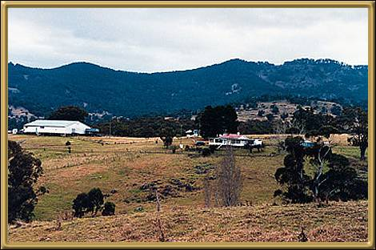

Photographer: Unknown
This is actually just out of Tamworth a little, but is very indicative of the area. Tamworth itself is quite a prosperous little city and is the home of the Tamworth Country Music Festival. The festival is held in January every year and lasts for ten days. If you're into Country music, this is definitely the place to be.